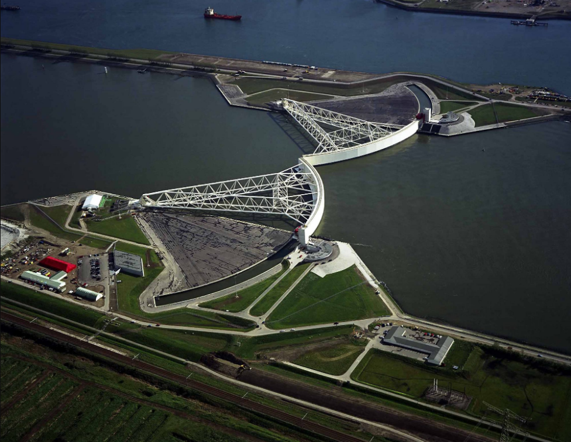

Tahun 1967 merupakan suatu periode yang sangat penting bagi Arsip Nasional, karena berdasarkan Keputusan Presiden 228/1967 tanggal 2 Desember 1967, Arsip Nasional ditetapkan sebagai Lembaga Pemerintah Non Departemen yang bertanggungjawab langsung kepada Presiden. Sementara anggaran pembelanjaannya dibebankan kepada anggaran Sekretariat Negara. Penetapan Arsip Nasional sebgai Lembaga Pemerintah Non Departemen diperkuat melalui Surat Pimpinan MPRS No. A.9/1/24/MPRS/1967 yang menegaskan, bahwa Arsip Nasional sebagai aparat teknis pemerintah tidak bertentangan dengan UUD 1945, bahkan merupakan penyempurnaan pekerjaan di bawah Presidium Kabinet. Dengan status baru tersebut, maka pada tahun 1968 Arsip Nasional berusaha menyusun pengajuan sebagai berikut:
Mengajukan usulan perubahan Arsip Nasional menjadi Arsip Nasional RI.
Mengajukan usulan perubahan Prps No.19/1961 menjadi Undang-undang tentang Pokok-pokok Kearsipan.

Ilustrasi Maeslantkering, Sumber :Watersnoodmuseum
Bagaimana pelabuhan tersebut pada akhirnya bertransisi ke perekonomian yang lebih ramah lingkungan. Mereka menggambarkan rencana pembangunan pembangkit listrik tenaga angin yang sangat besar di Laut Utara dan strategi untuk menangkap panas dari pabrik-pabrik yang menggunakan bahan bakar untuk menghangatkan rumah kaca yang memasok hasil pertanian negara tersebut. Ekspor Belanda hampir $100 miliar per tahun dalam produk pertanian, nomor dua setelah Amerika Serikat.
Tuan van Waveren menjelaskan cara kerjanya. Ketika gerbang ditutup, lengan-lengan tersebut melayang ke kanal, bertemu dan terkunci, tabung-tabung tersebut terisi air dan tenggelam ke dasar beton, membuat dinding baja yang tidak dapat ditembus menghadap Laut Utara. Prosesnya memakan waktu dua setengah jam. Tekanan dari laut kemudian ditransfer dari dinding ke sambungan bola terbesar di dunia, yang tertanam di tepian sungai di kedua sisi sungai.
Komputer, yang menggunakan sistem elektronik tertutup untuk menghindari serangan siber, memantau permukaan laut setiap jam dan dapat menutup atau membuka pintu gerbang secara otomatis. Hal ini penting: Tiga puluh pompa di dalam gerbang tersebut terhubung ke salah satu jaringan listrik di negara tersebut. Mereka mengambil air dari tabung ketika tiba waktunya Maeslantkering dibuka kembali.
Jika jaringan listrik mati, terdapat jaringan cadangan dan, sebagai pilihan terakhir, sebuah generator, karena yang lebih berbahaya daripada tidak menutupnya gerbang adalah tidak dibukanya kembali gerbang tersebut. Dalam hal ini, air yang mengalir dari sungai Rhine dan Meuse tidak dapat mengalir ke laut dan akan membanjiri Rotterdam lebih cepat daripada yang bisa dilakukan oleh Laut Utara. Seperti yang dikatakan Mr. Aboutaleb, pelarian tidak mungkin dilakukan.
Tuan Ovink hanya berkata setengah bercanda, "pilihan terakhir yang bisa dilakukan adalah meledakkannya." Maeslantkering jelas dibangun dengan mempertimbangkan skenario film bencana Hollywood: Ada redundansi yang berlebihan, dan penghalang tersebut dipersiapkan untuk model perubahan iklim yang paling ekstrem, dengan kenaikan permukaan air laut melebihi perkiraan saat ini.
Meski begitu, pejabat pelabuhan Rotterdam berencana menambah ketinggian gerbang setinggi dua kaki lagi.